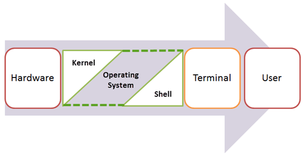

The kernel is the central component of a computer operating systems. The only job performed by the kernel is to the manage the communication between the software and the hardware. A Kernel is at the nucleus of a computer. It makes the communication between the hardware and software possible. While the Kernel is the innermost part of an operating system, a shell is the outermost one.[Reference :guru99]
